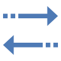
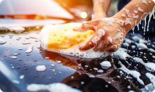

대표이사 : 윤양식
TEL : 1544-5969 / email : hello@thecarmeleon.com
Head Office : 세종특별자치시 연기면 조뱅이길 76-17
R&D Center : 부산광역시 남구 신선로 337번길 83-1
© DADOL Company. All Rights Reseved.
TEL : 1544-5969 / email : hello@thecarmeleon.com
Head Office : 세종특별자치시 연기면 조뱅이길 76-17
R&D Center : 부산광역시 남구 신선로 337번길 83-1
© DADOL Company. All Rights Reseved.
DADOL

카케어 서비스
세차인(내용 임시)
세차와 고객을 이어주는 IT 프로젝트 중개 플랫폼으로 고객에게 새로운 세차
가치를 제공합니다.


- 세차 의뢰
- 세차인
- 중개 플랫폼
- 서비스 제공
- 고객 연결
- 세차 회사 연결
- 세차 서비스
- 세차 홍보
ONE-STOP 서비스
클릭 한번으로 방문 세차 중개 플랫폼을 이용할 수 있습니다.
고객과 매니저를 이어 지속 가능한 일자리 창출 및 상생을 위한 플랫폼

개인 출장 서비스
(주) 다돌
10년 이상의 출장세차 경력을 가진 전문 인력을 갖추고 있습니다. 언제 어디서든
고객의 세차를 책임집니다.
1대1 집중케어 서비스를 통해서 고객님의 만족도를 높여드립니다.
개인출장 세차